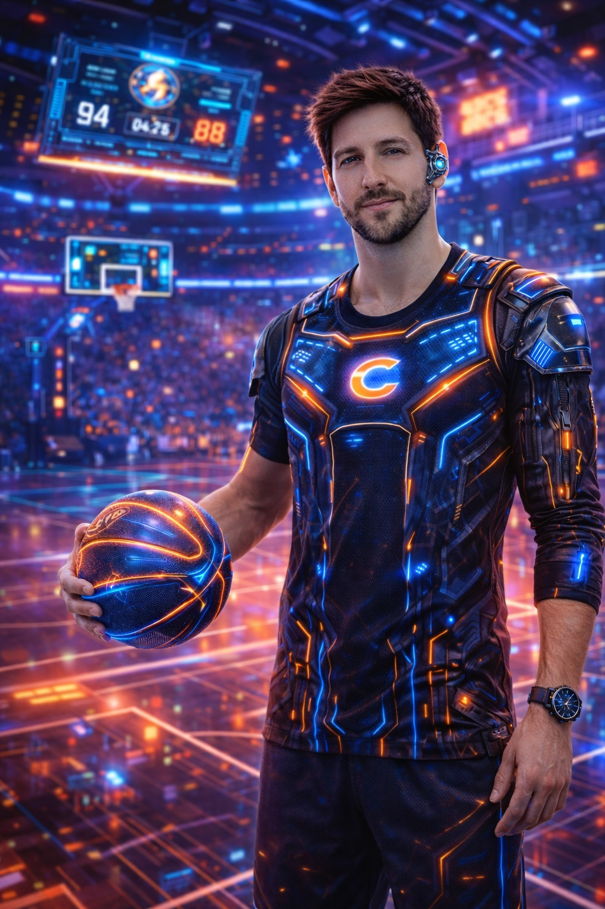
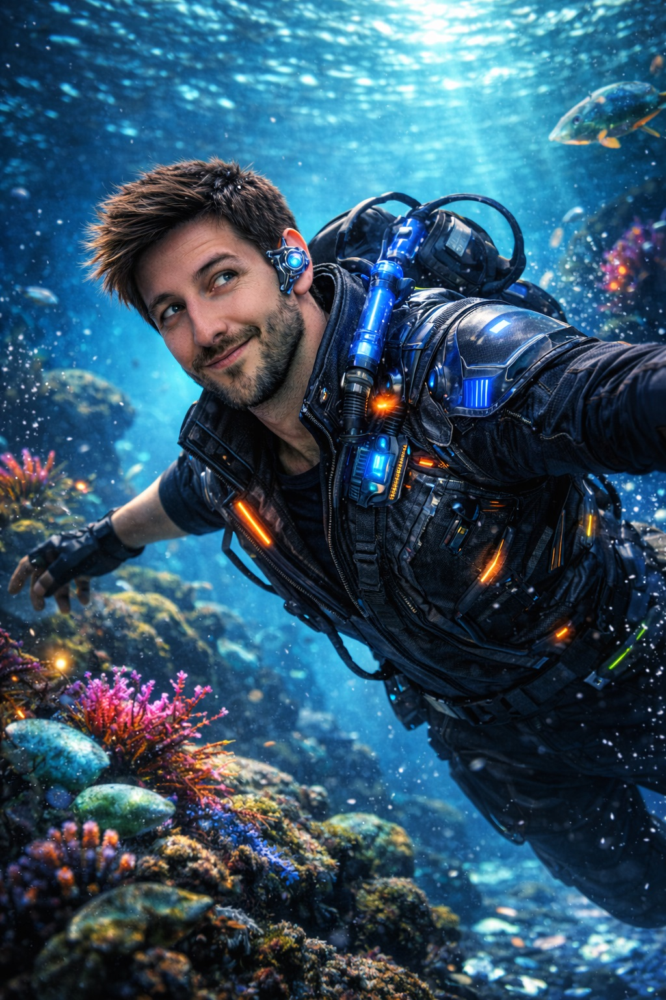
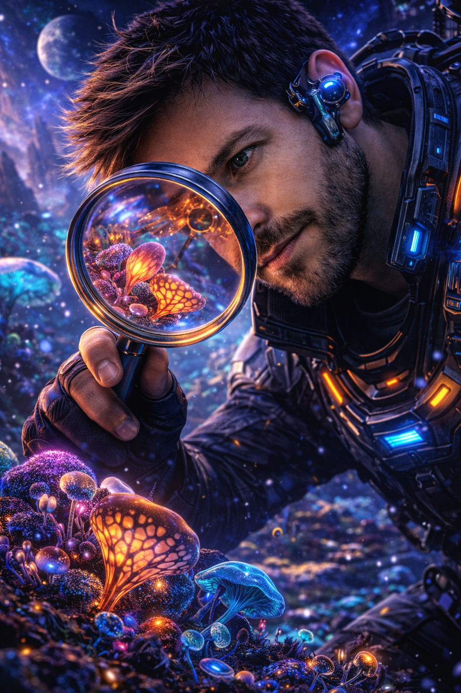
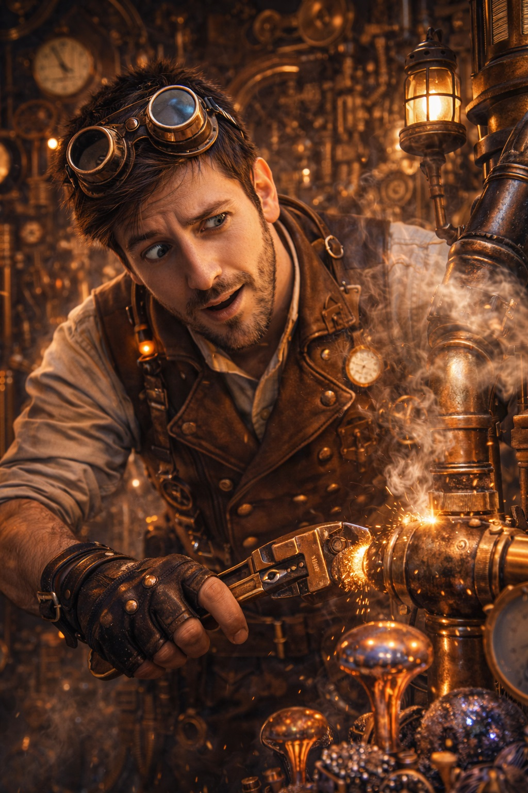
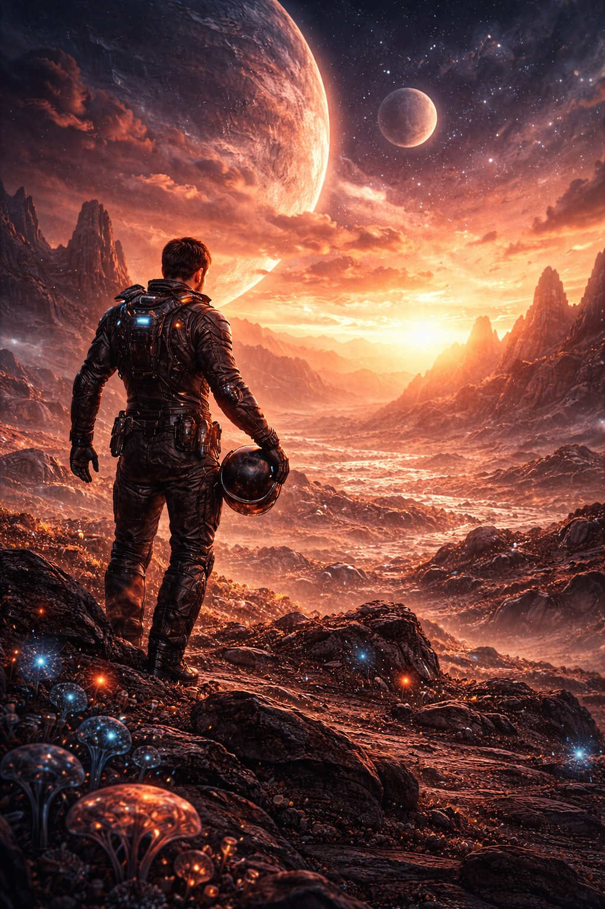
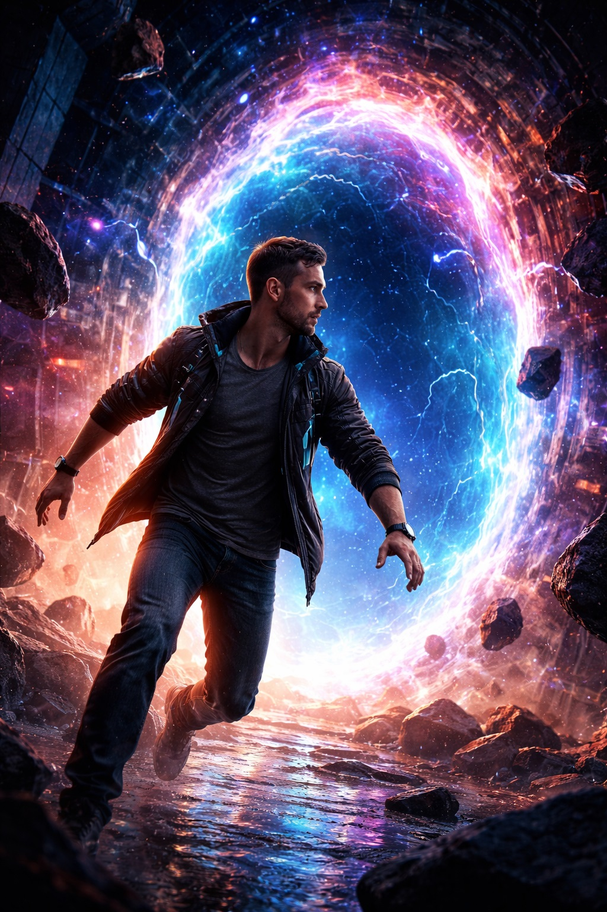
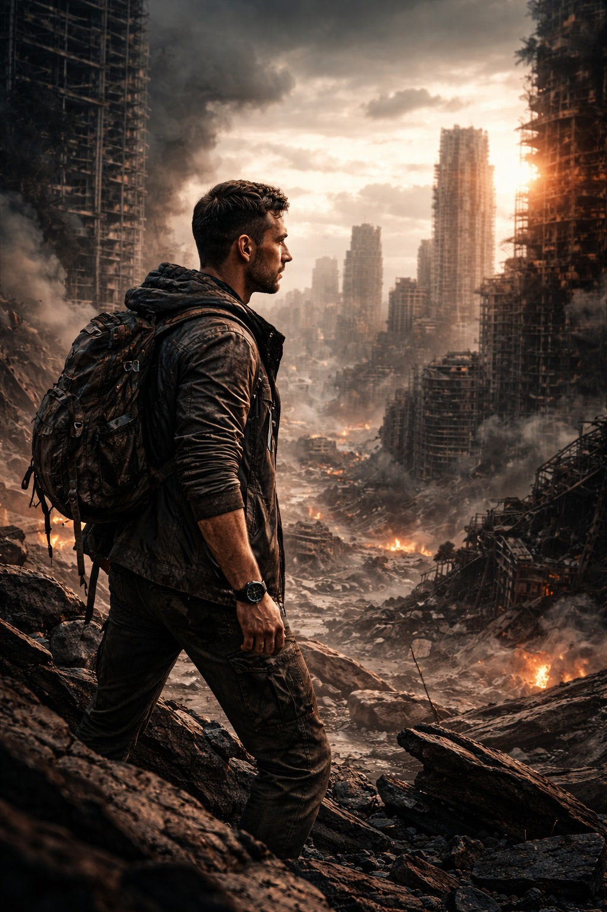

This page is designed to support Google Images + branded search visibility using descriptive filenames,
alt text that includes Chase Arenella, unique captions per image, and structured data that
explicitly lists each image as an ImageObject.
All creative assets are served from assets/images/creative/.
This creative visual storytelling complements written leadership and systems thinking content found in the Articles section and the Leadership page. For a full overview, see About Chase Arenella.







Keep filenames descriptive + branded (include chase-arenella + theme keywords),
and store creative assets in assets/images/creative/.